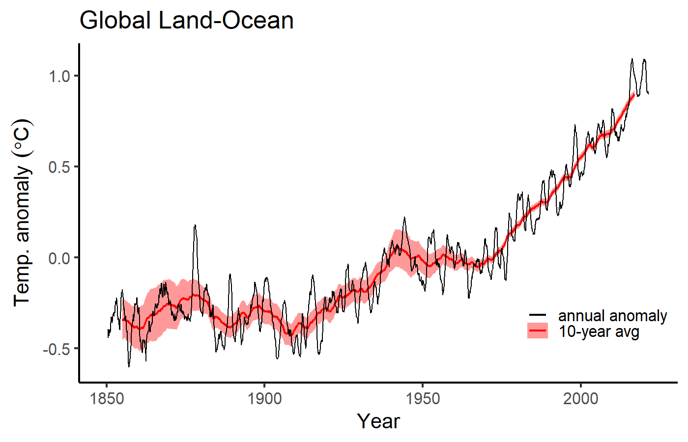
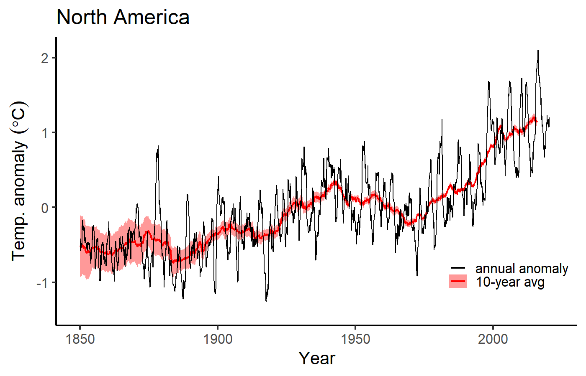
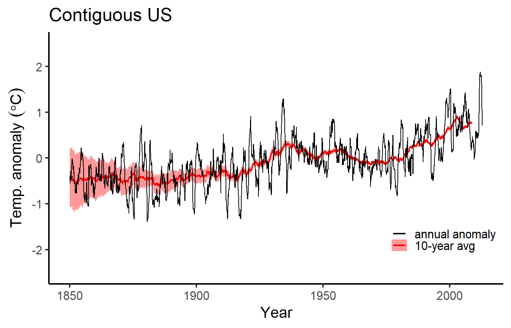
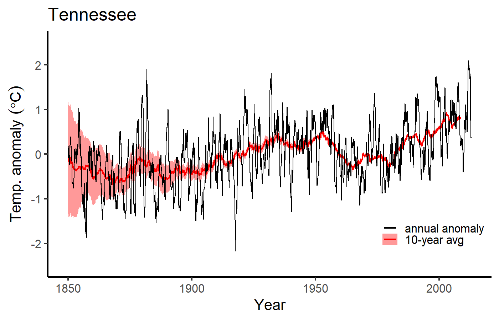
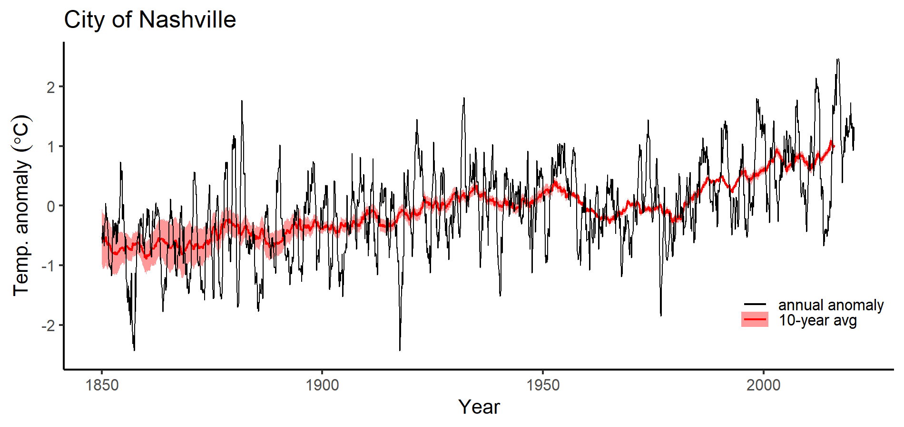
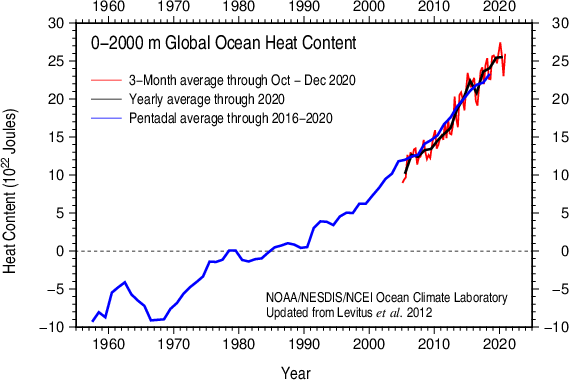
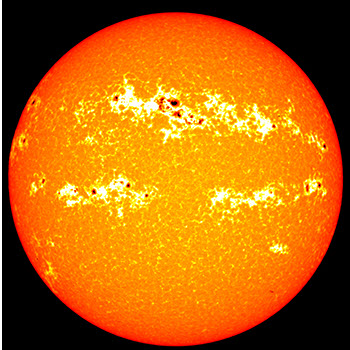
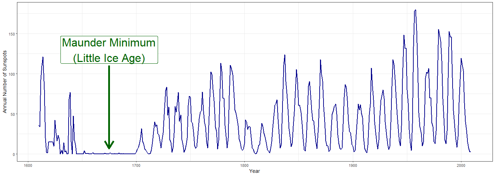
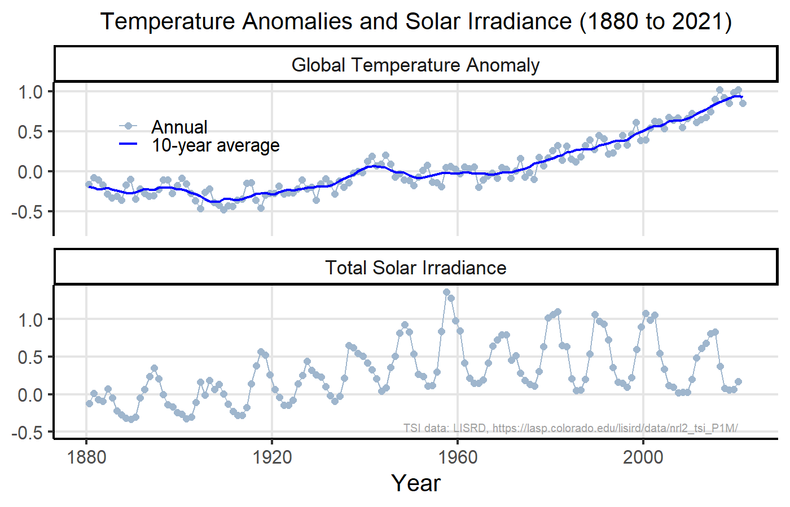
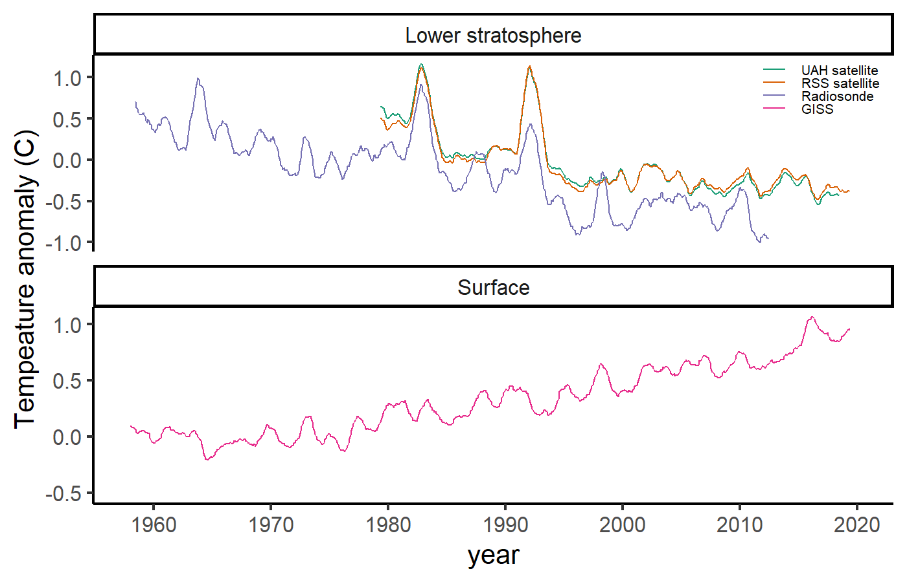

Climates of the Past
EES 3310/5310
Global Climate Change
Jonathan Gilligan
Class #13: Wednesday, February 16 2022
Black History Month
Black Leaders in Environmental Research
Dr. Robert D. Bullard
- Born in Elba, AL in 1946.
- Bachelor’s degree, Alabama A&M University, 1968.
- Ph.D. in Sociology, Iowa State University, 1976.
- Distinguished Professor of Urban Planning and Environmental Policy, Texas Southern University
- Former Dean of the School of Public Affairs at Texas Southern.
- Director, Bullard Center for Environment and Climate Justice.
- Founding Director of Environmental Justice Resource Center, Clark Atlanta University
- Pioneered the concepts of environmental justice and environmental racism
- Author of 18 books, more than 50 articles
Dr. Robert D. Bullard
Used civil rights laws to stop polluters from targeting Black communities.
Organized First National People of Color Environmental Leadership Summit in 1991.
Led the development of “Principles of Environmental Justice” which President Bill Clinton implemented in Executive Order 12898.
-
Awards Include:
- United Nations Champions of the Earth Lifetime Achievement Award (2020)
- William Julius Wilson Award for the Advancement of Justice (2019)
- Stephen Schneider Award for Outstanding Science Communication (2019).
- One of Newsweek Magazine’s 13 Environmental Leaders of the Century (2008).
Dr. Robert D. Bullard
“People who fight… People who do not let the garbage trucks and the landfills and the petrochemical plants roll over them. That has kept me in this movement for the last 25 years. And in the last 10 years, we’ve been winning: lawsuits are being won, reparations are being paid, apologies are being made. These companies have been put on notice that they can’t do this anymore, anywhere.”
Mineral Weathering
Carbonate vs. Silicate Weathering
-
Carbonate Weathering:
- Dissolves carbonate minerals on land
- Increases ocean carbonate
- Adds twice as much carbonate to oceans as silicate weathering
- Relieves ocean acidification
- Increases transfer of CO2 from atmosphere to ocean
- Creates carbonate rocks on sea floor with carbon that originated on land.
- Does not transform atmospheric CO2 to rocks
- Silicate Weathering:
- Transforms carbon dioxide in atmosphere into carbonate in the ocean.
- Ocean carbonate from silicate weathering turns into carbonate rocks on sea floor with carbon that originated in atmosphere.
- Transforms carbon dioxide in atmosphere into carbonate in the ocean.
Temperature of Earth
- Weathering acts as thermostat.
- Earth’s temperature has been remarkably stable over time.
- 4 billion years ago, sun was 30% dimmer…
- With today’s greenhouse effect the earth would have been frozen
- But there has constantly been liquid water.
- Early earth had more greenhouse gases (thermostat)
- Geologic change alters thermostat “setting”:
- Volcanic outgassing
- Land surface (e.g., mountain ranges)
- Vascular plants
- In the long run, silicate thermostat will fix global warming…
- …but it will take tens to hundreds of thousands of years.
CO2 vs. Methane
-
\(\COO\):
- After 1000 years, around 30% of excess \(\COO\) remains in atmosphere
- After 10,000 years, 13% remains
- After 100,000 years, 6% remains
- Methane (\(\methane\)):
- 31 times more powerful (molecule-for-molecule) than \(\COO\)
- Reacts with \(\OH\) (hydoxyl radicals) and oxydizes into \(\water\) and \(\COO\).
- Atmospheric lifetime: 9.6 years:
- After 25 years, 7% remains.
- After 100 years, 0.003% remains.
Climates of the Past
Climates of the Past

Climates of the Past

Climates of the Past

Digging into the past
Digging into the past:
Temperature measuring stations over the last 130 years.

Surface Temperature Monitoring

- 7280 stations
- 2277 active
- 1656 > 100 years
Temperature Anomaly
- Global temperature change:
- Average temperatures are different at different places.
- Temperatures change with the seasons
- How to compare temperature change between places with different climates?
- Temperature anomaly:
- Define a reference time period (several decades)
- Anomaly = actual temperature at a place and time minus
average temperature at that place during reference period
Temperature Anomaly
- Anomaly = actual temperature at a place and time minus
average temperature at that place during reference period - Example: Anomaly for Nashville, January, 2020
- Monthly avg. temp. for January, 2020 = \(7.3^\circ\mathrm{C}\)
- Average January temp 1950–1979 = \(3.0^\circ\mathrm{C}\)
- Anomaly = \({\color{darkblue}7.3^\circ\mathrm{C}} - {\color{darkgreen}3.0^\circ\mathrm{C}} = 4.3^\circ\mathrm{C}\)
Global Anomaly
1850–2021

North America
1850–2021

Continental US Anomaly
1850–2021

Tennessee Anomaly
1850–2021

Nashville Anomaly
1850–2021

Ocean Temperatures
Ocean Temperatures

Ocean Temperatures

Ocean Heat Content

Searching for
a Smoking Gun:
What caused the warming?
Sunspots?
Sunspots?

Sunspots
- Discovered 1611 by Galileo and J. Fabricius
- More sunspots \(\rightarrow\) brighter
- 11 year cycle
- Intensity changes:
- <1% for 11-year cycle
- <0.1% change in decadal average from little ice age to present

Sunspots didn’t cause recent warming

Fingerprints:
Predictions and Patterns
Predictions: 1967

Stratosphere vs. Surface:

Day vs. Night